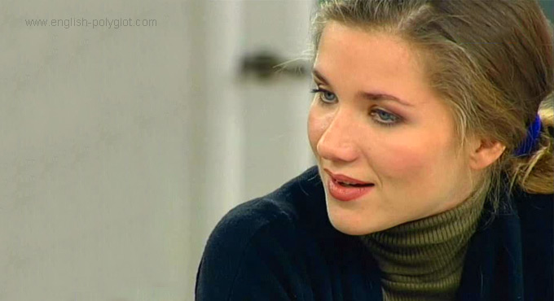

2 урок
Местоимения, вопросительные слова и предлоги

Анастасия Веденская (программа Полиглот)
Помните старый монолог Задорнова, в котором американского шпиона, «засланного» в СССР, отчислили с курсов английского языка из-за неправильного произношения? Шутка стара как мир, а кажется, что технологии преподавания английского не изменились.
Так ли важно знать о том, куда прижимать кончик языка, если ты не в состоянии связать нескольких слов? Сегодня, побююмимо других тем, мы затронем тему английского произношения.
Также мы усложним работу с базовой таблицей глагола, добавив к ней другие местоимения, вопросительные слова и предлоги. И познакомимся со словами-паразитами, которые часто приходят на помощь, когда трудно сказать что-то осмысленное.
Не забывайте, что каждый урок это кусочек минимально необходимой теоретической базы и практикум. Во втором уроке это — генератор фраз 2 (новые слова и вопросительные предложения) и новое погружение в среду языка — фрагмент фильма Криминальное чтиво.

Базовая таблица глаголов Петрова
Еще раз вкратце о работе с базовой таблицей или базовой схемой. Принцип, по которому она построена простой: три формы предложения — три времени. (Есть две конфигурации таблицы — обычная, показанная выше, в ней время расположено по оси игрек и транспонированная таблица глагола — время по оси икс. Используйте ту, которая Вам удобнее).
Времена подразделяются на прошедшее, настоящее и будущее. А форма предложения может быть утвердительной отрицательной или вопросительной.
В центре мы видим утвердительное предложение настоящего времени. Это основная форма глагола и лишь в третьем лице после местоимений he, she мы добавляем букву — s. Love превращается в loves.
В будущем времени мы добавляем вспомогательное слово will общее для всех местоимений.
В прошедшем времени для правильных глаголов мы добавляем окончание — d. Love превращается в loved. У неправильных глаголов своеобразная форма, которую мы указываем в скобках.
В отрицательном предложении настоящего времени для местоимений
I, you, we, they мы добавляем вспомогательную форму don't. Для третьего лица he, she — doesn't.
Отрицательное предложение будущего времени — здесь мы добавляем отрицательную частицу not, то есть получается форма I will not love. Эта форма тоже общая для всех местоимений.
В отрицательном предложении прошедшего времени didn't общая также для всех.
Вопросительное предложение настоящее время — для местоимений
I, you, we, they мы добавляем вспомогательный глагол do. Общая форма получается Do I love? Для местоимений третьего лица he, she вспомогательным глаголом является does. Does he love?
Вопросительное предложение будущего времени. Здесь мы используем вспомогательный глагол will, который выносится перед местоимением. Will I love? Will we love? Will he love?
Вопросительное предложение прошедшего времени. Вспомогательный глагол did — общий для всех местоимений. Did I love? Did we love? Did she love?
Прежде чем мы перейдем к животрепещущей теме произношения, несколько слов о самостоятельной работе.
Нужно каждый день, раз за разом, перебирать главные английские глаголы, «прокручивая» их по базовой таблице. Выкроили паузу в повседневных делах, прокрутили один глагол — и дальше занимаемся своими делами.
Чем чаще глагол употребляется в речи, тем он важнее для нас. Таких важных глаголов всего несколько десятков. Мы будем постепенно их узнавать и сразу пускать в «оборот» — прокручивать через базовую таблицу глагола. Это первый шаг для того, чтобы в ходе нашего курса выйти на уровень свободного ненапряженного владения языком.
Сразу оговорюсь, одной таблицы будет недостаточно. Ведь нужен какой-никакой словарный запас. Чтобы свободно общаться на языке, достаточно знать базовый словарь из трёхсот с небольшим слов, которые охватывают 90% нашей речи. Десятки тысяч других слов нас интересуют меньше. Хотя, вероятно, какие-то из них Вы уже знаете. Так вот, если заработает базовая таблица (по словам Петрова, ниточка, на которую нанизываются бусинки), то все слова, понимаемые нами пассивно, мы сможем использовать активно.
100 самых употребляемых слов
Американский лингвист Моррис Сводеш в середине прошлого века предложил термин лексический полураспад. Подразумевая под ним период времени, за который два языка отошли от одного общего праязыка.
Гипотетически, зная, к примеру, сто самых употребимых слов русского и английского языков можно, при помощи необходимых формул, установить приблизительное время, когда наши предки говорили на одном языке.
Подобный подсчет сложен и выходит за рамки нашего курса. Однако, нам интересно, что этот подсчет делается на основании данных из спецтаблиц, куда попадают самые употребляемые слова
каждого из сравниваемых языков. Эти таблицы называются списками Сводеша. Сто самых употребляемых английских слов можно узнать из списка Сводеша для английского языка. Эти сто слов — «ядро языка». Наиболее исторически устойчивые лексемы.
Стоит отметить, что вполне ожидаемого глагола love среди них — нет. Зато есть, например, другой глагол, который обойден вниманием учебников английского:
- barf — рвать, блевать
То есть, про слова из этого списка можно упрощенно сказать так: их знает каждый носитель языка. Стоит ли знать эти слова Вам, решайте сами.
Для того, чтобы общение на английском было более свободным, Дмитрий Петров предлагает не забывать слова с однотипным окончанием -ция или -сия. В английском языке большинство этих слов имеют тот же самый корень, а окончание -tion или -sion.
- revolution — революция
- information — информация
Таких слов по статистике существует несколько десятков тысяч.
таблица глаголов (обычная) (транспонированная)
Каким бы ни был Ваш словарный запас, ни на минуту не забывайте о базовой таблице глаголов. Если Вам трудно работать с ней по памяти, Вам поможет генератор фраз.
Проверим как Вы продвинулись на пути освоения нашей базовой таблицы. Добавим новое слово:
- ask — просить, спрашивать
Как сказать по-английски (если нужна таблица глаголов: обычная и транспонированнная — время по оси Х):
кликнув по реплике, Вы откроете её перевод и упрощенную транскрипцию
Еще один новый глагол:
- answer — отвечать
Чаще всего в разговорной речи глагол соединяется с местоимением. Многие методики предлагают отдельно спрягать глаголы, отдельно изучать местоимения. Отсюда сложности при попытке их совместного использования. Чтобы избежать эти трудности, мы будем сразу формировать простые, но готовые к употреблению словосочетания из глаголов и местоимений.
Следующий глагол — неправильный:
Еще один неправильный глагол:
Параллельно с тем как мы доводим до автоматизма базовую таблицу, нужно научиться снимать напряжение во время общения.
Пока психолингвисты ожесточенно спорят о методиках обучения иностранным языкам, Дмитрий Петров предлагает сфокусировать наше внимание на понятных вещах.
Язык — это не словарь и не набор грамматических правил, а среда, пространство, в которое мы проникаем и которое обладает еще и цветом, вкусом, голосом и запахом.
Суть методики заключается в проявлении наших актерских способностей. Нужно выбрать для себя либо персонаж, либо предмет, который помогает переключаться с одного языка на другой. Чтобы не просто говорить фразы, а добавлять к словам новые ощущения, свойственные носителю языка.
Попробуйте произнести любую фразу, вложив в неё максимум чувств, и возможно Вы заметите, что автоматически переходите в новое состояние:
- I will not take your car — я не возьму твою машину
Дмитрий Петров считает, что важно пробудить в человеке ощущения, связанные с конкретным языком. Например, учишь итальянский, вспоминаешь фильмы Феллини, песни Челентано, вкус пиццы, аромат капучино... Необходимо или естественное нахождение в среде языка, или ее искусственное воссоздание. Желательно, чтобы язык входил в глаза, в уши, в сердце. Очень помогает слушать песни и смотреть фильмы без перевода.
Подраздел нашего курса погружение в среду языка — это возможность переключаться между пространствами двух языков одним кликом.

Базовая таблица глаголов Петрова
Английское произношение
По мнению Петрова тратить время на овладение каким-то акцентом — бессмысленно. Если конечно Вы не хотите поселиться в какой-то конкретной деревне и Вам желательно как-то настроиться на местный акцент.
Потому что, даже не говоря об Америке, Австралии, Индии, Ирландии, только в одной маленькой Англии насчитывается 35 ярко выраженных диалектов, которые часто взаимонепонимаемы. Столица англоязычного мира, город Лондон, славится тем, что там есть местное наречие, называемое кокни, которое непонятно большинству людей, живущих в соседних графствах — в пригородах Лондона. Поэтому вряд ли стоит считать задачу «акцента» приоритетной, изучая язык.
Серьезность своих теоретических выкладок Петров подтверждает практикой. В интервью журналу Огонёк Дмитрий Петров признался, что помогал готовить нашумевшее выступление Виталия Мутко на заседании исполкома FIFA. «Я помогал ему: немного проконсультировал, как выстраивается речь, как что-то произносится. Я думаю, он преодолел очень серьезный психологический барьер и, в принципе, совершил подвиг».
Многочисленные комментарии к этому видео (в основном упреки по поводу неправильного произношения), по сути, раскрывают причину, по которой многие из нас не говорят по-английски. И причина эта — боязнь ошибиться. Или еще точнее — боязнь «выглядеть дураком».
Урок №2 (сокращенный)
На каждом уроке мы будем добавлять несколько глаголов и запускать их в механизм базовой таблицы. Для того, чтобы как можно быстрее довести работу этой структуры до автоматизма.
Местоимения
А теперь расширим наши возможности и количество комбинаций, которые мы можем создавать. Нам помогут местоимения. Причем уже в двух формах:
Первая отвечает на вопрос кто?, а вторая, — на вопросы кому? кого? кем? В русском языке мы бы сразу заговорили о падежах, в английском языке падежей нет, поэтому здесь местоимения универсальны. Попробуем совместить их с глаголами:
А теперь смотрите что мы имеем: 8 самых употребляемых глаголов, плюс местоимения и плюс базовая таблица глагола. В итоге — около 5 тысяч комбинаций. То есть слов — 15-20, а количество комбинаций, которые мы можем создать, — на два порядка больше. Вот это — главный механизм, который делает речь свободной. Нужно комбинировать глаголы с местоимениями:
- did you see her? — ты видел ее?
- she didn't see me — она не видела меня
- I saw her — я видел её
При этом не забывайте, что глаголы можно и нужно использовать во всех возможных вариантах по временам и формам высказываний.
Видите? Каждая новая группа слов даёт нам не арифметический плюс, а на порядок большее число возможных комбинаций.
Маленький ребенок начинает говорить не в тот момент, когда знает много слов, а в тот момент, когда у него начинает работать комбинаторика. То есть, когда он может комбинировать разные группы слов. И мы в своем просветленном взрослом состоянии можем воспроизвести этот механизм.
Вопросительные слова
Зачаток, эмбрион диалога или беседы это — вопрос-ответ. Поэтому следующая по важности группа слов — это вопросительные слова.
Эта группа вопросительных слов позволит нам добавить к владению глаголом и местоимением еще и способность задавать вопросы и получать на них ответы. На наше счастье их не так много:
В вопросительном предложении, которое начинается с одного из этих слов, вторым словом должен обязательно идти вспомогательный глагол — do, does, will, did, don't... и так далее.
Если, например, у нас есть утвердительное предложение:
- you love — ты любишь
А нам надо образовать вопросительное предложение: зачем ты любишь? То ошибкой будет, если мы соорудим такую конструкцию:
На втором месте после вопросительного слова why должен идти вспомогательный глагол. Правильно будет:
- why do you love? — зачем ты любишь?
- why does she love? — зачем она любит?
И так далее.
Важно иметь в виду, что если глагол — do используется не как вспомогательный, а как обычный глагол, то в вопросе его нужно дублировать.
Например, если у нас есть утвердительное предложение:
- they do wrong — они делают неправильно
И мы хотим спросить почему они делают неправильно?, то будет ошибкой, если мы в вопросе один раз употребим — do. Получится:
- why do they wrong? — почему они неправильные?
Это по своему правильное предложение, но оно мы хотели спросить о другом. Если мы хотим спросить почему они делают неправильно?, то нужно добавить второе — do:
- why do they do wrong? — почему они делают неправильно?
Именно так это делается в известном приветствии:
- how do you do? — как дела?
Когда у нас возникла некая фраза и мы хотим ее выразить, нам не надо думать эту фразу по отдельным словам: «знаю я это слово или нет». Надо думать, «а какую я мысль хочу сказать»? Если мне надо спросить:
- с чего ты взял?
и я не знаю нужных слов по-английски, то лучше спросить более легкий вариант, идентичный по смыслу:
- почему ты так думаешь? — why do you think?
Потренируемся:
Когда у нас постепенно начинает работать этот механизм глагола, мы уже не думаем каждый раз does she? did she? Мы добавляем потихоньку штрихи и расширяем структуру, добавляя местоимения. Не просто I see, а уже I see you. Не просто did you see him? а уже where did you see him?
Вопросительные слова дают нам возможность задавать вопросы, что является началом диалога.
Когда Вы спрашиваете: when will you see him? то в центре этой конструкции по-прежнему будет находиться один из вариантов нашей базовой таблицы.
Урок №2 (полная версия)
То есть, что́ бы мы не говорили на примитивном уровне, на более сложном уровне, всегда всё упирается в одно: структуру глагола, которую надо завести как пружину, чтобы она работала автоматически.
Самое главное и самое быстрое чему человек учится при изучении языка, это умение говорить о себе любимом. То есть с самого начала нужно уметь о себе что-нибудь сказать:
- Кто я?
- Где я живу?
- Где я работаю?
- Что я люблю?
- Что я не люблю?
Поэтому с самого начала мы будем постепенно, по принципу спирали, раскручивать способность что-то сказать о себе. Сначала это будут какие-то элементарные вещи, потом более развернутые.
Предлоги места
Для этого нам понадобится еще одна группа слов это — предлоги. В этом списке — самые важные, обозначающие местоположение или движение. Предлоги работают как цемент, склеивают фразы в предложения.
А теперь попробуйте по-английски ответить на эти английские же вопросы:
Поначалу, когда мы учимся отвечать или задавать вопросы, нужно сначала формулировать вопрос или ответ по-русски. Потому что иногда трудно построить фразу и на родном языке. На обдумывание уходит время. И тут на помощь приходят слова, которые принято называть паразитами. Они не только заполняют паузы, но и выполняют очень важную психологическую функцию — снимают с нас напряжение.
Когда нас спрашивают по-русски: Да или нет? Что мы можем ответить?: Ну, я не знаю, может да, может нет. Кто ж его знает, тут подумать надо. Ну, наверное, скорее всего, да. Как сказать то же самое по-английски?
Бо́льшая часть речи, которую Вы слышите, когда англоязычные люди щебечут со страшной скоростью, абсолютно пуста и не имеет никакого смысла. Well, you know, come I have to think about probably most likely — yes! Из этих 13 слов — 12 не значат ничего. Но они создали впечатление, что я говорю по-английски.
Слова паразиты
В английском языке, как и в русском, есть четко сформировавшаяся группа — слова паразиты.
Если Вы посмотрите любое ток-шоу или интервью по Би-Би-Си или по Си-Эн-Эн с актером, с политиком или бизнесменом, Вы заметите, что они будут говорить очень просто. Вот как раз в таких случаях и можно услышать well, you know, mean. Чего не услышишь в новостных программах, где диктор читает невидимый зрителю текст и каждое слово отредактировано. Поэтому большая ошибка учиться языку, слушая новости.
То есть, Вы видите, мы очень демократично осваиваем язык. Параллельно с изучением структуры, которую нужно довести до автоматизма, чтобы язык работал, мы должны иметь инструмент, чтобы вовремя расслабиться. А лучший способ расслабиться — это не напрягаться. А чтобы не напрягаться, нужно говорить просто, перекладывая ответственность за правильность на те структуры, которые должны работать за нас автоматически.
И что это нам дает? Первое — начало диалога — вопрос-ответ:
Причем каждая вот эта ступенька, должна сопровождаться автоматизацией предыдущей. Я надеюсь, что через пару дней первая основная базовая структура, базовая таблица глагола, заработает автоматически.
И самое главное — свободу. Потому что свобода — прежде правильности. Нельзя начинать с правильности, это все равно что ставить телегу перед лошадью. Такой подход никогда не приносит позитивных результатов.
Итак, что нам требуется сделать к следующему разу? Мы начали новый урок, тем же, чем закончили предыдущий — базовой таблицей глагола. К ней мы добавили еще несколько элементов. Первый из них — местоимения, они позволяют нам создавать развернутые фразы. Не просто я вижу, я знаю, а — я вижу тебя, когда ты увидишь ее? Группа вопросительных слов, которые на порядок расширяют количество возможных комбинаций. Несколько общеупотребительных предлогов, чтобы мы могли уже формировать ответы на вопросы, которые задаются. Поэтому, я попрошу Вас, используя новые глаголы, которые мы добавили сегодня, продолжать работать над базовой таблицей глагола. Сопровождая ее новыми группами слов.
А теперь проверьте себя на генераторе фраз 2 с новой порцией вопросительных фраз.
И на десерт фрагмент любимого фильма в рубрике «погружение в среду языка».
Фрагмент фильма Криминальное чтиво
Сегодня это фрагмент ленты Криминальное чтиво, обладателя премии «Оскар» за лучший сценарий. Фрагмент можно назвать так: «диалог во время знакомства» и «диалог в ресторане». Несколько реплик с несложным английским и пара английских идиоматических выражений.
Правила английского языка (википедия: системные отличия от русского языка) гласят:
"В третьем лице для (обозначения) людей используются местоимения:
... Большинство других существительных (в том числе, названия животных) заменяется местоимением:
- it - оно
То есть, по правилам, местоимение it необходимо использовать, в том числе, и для обозначения животных. Однако нередко эти правила не соблюдаются.
Петров вообще не рассматривает местоимение it как оно:
А всё потому, что в английском языке нет понятия рода. По-русски мы можем сказать: большой, большая, большое. В английском языке есть одно слово: big. Падежные отношения передаются позицией слов в предложении и предложными конструкциями.
Отрицательные предложения
Для отрицательного предложения также характерен прямой порядок слов.
- I don't love - я не люблю
- you don't love - ты не любишь.
И так далее. Когда он и она, то есть третья форма единственного числа, структура имеет форму does not (сокращенно doesn't).
- he doesn't love - он не любит
- she doesn't love - она не любит
- I will not love - я не буду любить
- you will not love - ты не будешь любить
Урок №1 (сокращенный)
По словам Дмитрия Петрова, базовая таблица глагола - "самая трудная и самая главная в английском языке. Освоил ее, считай освоил половину языка".
В финальной части каждого урока Вы найдете генератор фраз. С его помощью освоить базовую таблицу глагола будет проще. Сложность фраз, выдаваемых генератором, с каждым уроком будет возрастать, и Вы можете, перемещаясь по урокам выбирать необходимый уровень сложности.
Вопросительные предложения
Для вопросительного предложения характерен обратный порядок слов:
глагол (обычно вспомогательный) — подлежащее — глагол — второстепенные члены предложения.
В настоящем времени появляется вспомогательный глагол - do:
- do I love? - люблю ли я?
- do you love? - любишь ли ты?
Если он или она, то - does:
- does he love? - любит ли он?
- does she love? - любит ли она?
В прошедшем времени добавляется слово did:
- did I love? - любил ли я?
- did you love? - любила ли ты?
- did he love? - любил ли он?
И вопрос в будущем - впереди ставится will.
- will I love? - полюблю ли я?
- will you love? - полюбишь ли ты?
"Исторически так сложилось, что слова do, does, did сами по себе означают делать. Носитель языка, который может быть вообще неграмотным и может не знать этих таблиц, при этом будет говорить правильно. Поскольку он воспринимает эти слова как делает. Делал ли ты это?
- does he love? - делает ли он любовь?
Поначалу такая форма быстрого перевода может облегчить понимание.
Итак, по оси икс у нас форма высказывания: утверждение, вопрос или отрицание. По оси игрек время: происходит сейчас? происходило в прошлом? или произойдет в будущем?
Идем дальше. В словарном запасе среднестатистического носителя не более 50-60 глаголов, которыми он пользуется регулярно. Остальные глаголы, общим числом в несколько тысяч, употребляются изредка - в 10% речи.
Урок №1 (полная версия)
Среди самых употребимых глаголов основную массу составляют неправильные глаголы, поскольку именно частое употребление приводит к их искажению. Другая часть - правильные глаголы, такие как love или live или, например:
Но без неправильных глаголов - никуда. Одно радует их будет не так много: 20-30. Вот один из неправильных глаголов видеть - see.
Как же он видоизменяется?
- I see - я вижу
- he sees - он видит
- I will see - я увижу
- I will not see - я не увижу
Вроде всё точно по таблице:
- I don't see - я не вижу
- he doesn't see - он не видит
- we didn't see - мы не видели
И тут, кажется, без изменений:
- did you see? - ты видел?
- do you see? - ты видишь?
- will you see? - а ты увидишь?
И только в одном месте из девяти в утвердительном предложении прошедшего времени появляется "искаженная веками" форма:
И так далее... Запомнить просто: в одном месте из девяти: утвердительное предложение прошедшего времени.
С базовой таблицей глагола - всё. Можно перевести дух. Многих может удивить петровский подход к подаче теоретической базы. Глаголы - отдельно, причастия - отдельно. Однако он уверен, что "причастия не надо валить в кучу с формами глагола". А причастие как мы помним, это значит сделанное, увиденное, построенное и так далее.
Чтобы было видно неправильный глагол, мы его записываем вот так: see (saw) - в скобках вариант, который употребляется только в одном месте: в утвердительном предложении прошедшего времени. Во всех остальных случаях обычное: see. Например, приходить - come (came). Глагол - неправильный. Он во всех формах ведет себя стандартно:
- I come - я прихожу
- I will come - я приду
- will you come? - ты придешь?
- she didn't come - она не приходила
- did he come? - он не приходил?
И так далее. И только в одном месте - при утверждении в прошедшем времени будет:
В русском языке различают глаголы совершенного и несовершенного вида. Такого различия в английском языке нет и форма глагола не выражает законченность действия. Если в русском языке мы можем сказать: он пришел или он приходил. То в английском только: he came.
И помните, каким бы ни был вспомогательный глагол: will, does, did после них всегда идет только основная форма глагола. Live, love, come и так далее. Вне зависимости от того какой глагол правильный или неправильный.
Рассмотрим еще два неправильных глагола:
Схема работы с ними та же. Вы берете глагол и "прокручиваете" его по всем девяти клеткам. Занимает это от 20 до 30 секунд. Потом берете другой глагол.
А теперь немного практики. Вооружитесь базовой таблицей глагола (есть две: большая и поменьше) и попробуйте перевести на английский язык следующие фразы. А потом, кликая по ним, проверьте правильность перевода. Возьмем глаголы open (открывать) и close (закрывать):


кликнув по реплике, Вы откроете её перевод и упрощенную транскрипцию
Забегая вперед скажу, что помимо этой самой первой и самой сложной таблицы, есть несколько других, меньших по объему и легче запоминаемых. Но все последующие схемы базируются именно на первой таблице глагола.
Если Вы сумете довести работу по этой таблице до автоматизма, Вы сильно облегчите себе жизнь. Ведь при попытке заговорить по-английски Вам сначала нужно вспомнить правильную глагольную форму.
А после того как Вы научитесь быстро строить простые фразы, Вы сможете легко добавлять к ним подробности и другие структуры.
А теперь закройте базовую таблицу глагола и откройте генератор фраз 1. Задача на сегодня - научиться, не заглядывая в таблицу, переводить фразы с глаголами из первого урока. Первый клик по кнопке "старт" выводит фразу, второй - показывает ответ. Сначала попробуйте переводить фразы с английского на русский, а затем в обратном порядке.
И в заключении, поговорим о погружении в среду английского языка.
Фрагмент фильма Аватар
Так же как и ребенок, оказываясь один на один со взрослой речью, люди, изучающие английский язык, рано или поздно сталкиваются с речью носителей языка. Такая встреча может испугать из-за отсутствия навыка восприятия английской речи на слух. Однако, этот навык приобретается только с опытом. Поэтому, чем раньше Вы начнете погружаться в английскую языковую среду, тем лучше. И так же как и ребенку Вам нужно научиться распознавать и выхватывать из языка готовые конструкции, которые Вы сможете применить позднее.
А лучший способ погрузиться в среду языка с бесконечным количеством расхожих фраз, идиоматических выражений и разнообразной лексики - посмотреть фильм на английском языке. Воспринимайте каждый предлагаемый фильм как учебное пособие. Посмотрите фрагмент один или несколько раз и попробуйте распознать английские фразы на слух, не заглядывая в субтитры.
И первый отрывок - это фрагмент из фильма Аватар. Обратите внимание каким простым может быть английский язык. Несложные реплики, подкрепленные визуальными средствами фильма, как будто специально созданы для изучения английского.
Напоследок замечу, что художественный перевод иногда искажает правильное значение некоторых слов. Например, слово:
grandfather - дедушка, дед
в русском закадровом переводе фильма трактуется как прадедушка. Кто-то увидит в этом ошибку, кто-то - усиление эффекта.
Подпишитесь на рассылку сообщений о готовых уроках и новых возможностях сайта